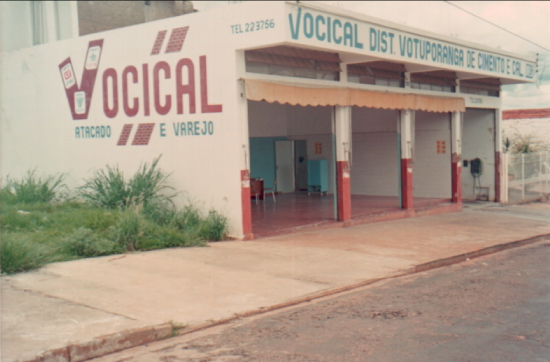

11 unidades, 2 estados
Cobertura em São Paulo e Mato Grosso, com mix adaptado à demanda de cada região.
Desde 1987, o Grupo Vocical distribui produtos e soluções para construção civil e indústrias, operando por 11 unidades em São Paulo e Mato Grosso.

O Grupo Vocical nasceu em 1987 como Vocical Distribuidora Votuporanga de Cimento e Cal. Em mais de três décadas, cresceu para um grupo de seis marcas e onze unidades, atendendo clientes em São Paulo, Mato Grosso e diversos estados do país.
O foco sempre foi o mesmo: abastecer obras e indústrias com disponibilidade, prazo e atendimento de quem entende do canteiro.
Cobertura em São Paulo e Mato Grosso, com mix adaptado à demanda de cada região.
Logística com previsibilidade para manter o abastecimento regular do canteiro.
Vergalhão, aço armado e chapa cortados e dobrados conforme o seu projeto.
Apoio no quantitativo, alternativas de produto e orçamento técnico rápido.
Fale com o time do Grupo Vocical e descubra a unidade mais perto de você.
Fale Conosco